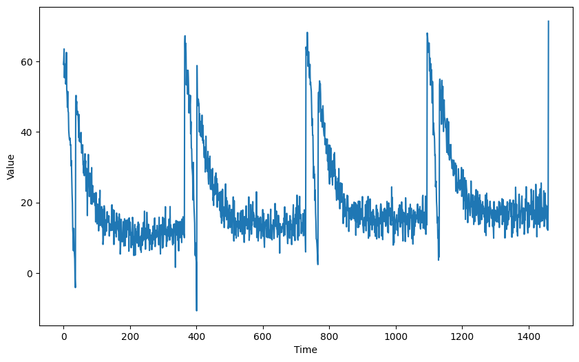

C4W3: Using RNNs to predict time series
Contents
C4W3: Using RNNs to predict time series#
https-deeplearning-ai/tensorflow-1-public/C4/W3/assignment/C4W3_Assignment.ipynb
Commit
7ea55dbon Apr 18, 2022 - Compare
import tensorflow as tf
import numpy as np
import matplotlib.pyplot as plt
from dataclasses import dataclass
Generating the data#
def plot_series(time, series, format="-", start=0, end=None):
plt.plot(time[start:end], series[start:end], format)
plt.xlabel("Time")
plt.ylabel("Value")
plt.grid(False)
def trend(time, slope=0):
return slope * time
def seasonal_pattern(season_time):
"""Just an arbitrary pattern, you can change it if you wish"""
return np.where(season_time < 0.1,
np.cos(season_time * 6 * np.pi),
2 / np.exp(9 * season_time))
def seasonality(time, period, amplitude=1, phase=0):
"""Repeats the same pattern at each period"""
season_time = ((time + phase) % period) / period
return amplitude * seasonal_pattern(season_time)
def noise(time, noise_level=1, seed=None):
rnd = np.random.RandomState(seed)
return rnd.randn(len(time)) * noise_level
def generate_time_series():
# The time dimension or the x-coordinate of the time series
time = np.arange(4 * 365 + 1, dtype="float32")
# Initial series is just a straight line with a y-intercept
y_intercept = 10
slope = 0.005
series = trend(time, slope) + y_intercept
# Adding seasonality
amplitude = 50
series += seasonality(time, period=365, amplitude=amplitude)
# Adding some noise
noise_level = 3
series += noise(time, noise_level, seed=51)
return time, series
# Save all "global" variables within the G class (G stands for global)
@dataclass
class G:
TIME, SERIES = generate_time_series()
SPLIT_TIME = 1100
WINDOW_SIZE = 20
BATCH_SIZE = 32
SHUFFLE_BUFFER_SIZE = 1000
# Plot the generated series
plt.figure(figsize=(10, 6))
plot_series(G.TIME, G.SERIES)
plt.show()

Processing the data#
def train_val_split(time, series, time_step=G.SPLIT_TIME):
time_train = time[:time_step]
series_train = series[:time_step]
time_valid = time[time_step:]
series_valid = series[time_step:]
return time_train, series_train, time_valid, series_valid
time_train, series_train, time_valid, series_valid = train_val_split(G.TIME, G.SERIES)
def windowed_dataset(series, window_size=G.WINDOW_SIZE, batch_size=G.BATCH_SIZE, shuffle_buffer=G.SHUFFLE_BUFFER_SIZE):
dataset = tf.data.Dataset.from_tensor_slices(series)
dataset = dataset.window(window_size + 1, shift=1, drop_remainder=True)
dataset = dataset.flat_map(lambda window: window.batch(window_size + 1))
dataset = dataset.shuffle(shuffle_buffer)
dataset = dataset.map(lambda window: (window[:-1], window[-1]))
dataset = dataset.batch(batch_size).prefetch(1)
return dataset
dataset = windowed_dataset(series_train)
Defining the model architecture#
def create_uncompiled_model():
model = tf.keras.models.Sequential([
tf.keras.layers.Lambda(lambda x: tf.expand_dims(x, axis=-1), input_shape=[G.WINDOW_SIZE]),
tf.keras.layers.Bidirectional(tf.keras.layers.LSTM(128)),
tf.keras.layers.Dense(1),
tf.keras.layers.Lambda(lambda x: x * 100.0)
])
return model
uncompiled_model = create_uncompiled_model()
try:
uncompiled_model.predict(dataset)
except:
print("Your current architecture is incompatible with the windowed dataset, try adjusting it.")
else:
print("Your current architecture is compatible with the windowed dataset! :)")
34/34 [==============================] - 2s 14ms/step
Your current architecture is compatible with the windowed dataset! :)
Adjusting the learning rate#
def adjust_learning_rate():
model = create_uncompiled_model()
lr_schedule = tf.keras.callbacks.LearningRateScheduler(lambda epoch: 1e-6 * 10**(epoch / 20))
optimizer = 'adam'
model.compile(loss=tf.keras.losses.Huber(),
optimizer=optimizer,
metrics=["mae"])
history = model.fit(dataset, epochs=100, callbacks=[lr_schedule])
return history
lr_history = adjust_learning_rate()
Epoch 1/100
34/34 [==============================] - 4s 16ms/step - loss: 47.3909 - mae: 47.8909 - lr: 1.0000e-06
Epoch 2/100
34/34 [==============================] - 1s 15ms/step - loss: 44.8552 - mae: 45.3552 - lr: 1.1220e-06
Epoch 3/100
34/34 [==============================] - 1s 16ms/step - loss: 42.0223 - mae: 42.5223 - lr: 1.2589e-06
Epoch 4/100
34/34 [==============================] - 1s 14ms/step - loss: 38.8538 - mae: 39.3522 - lr: 1.4125e-06
Epoch 5/100
34/34 [==============================] - 1s 14ms/step - loss: 35.4233 - mae: 35.9225 - lr: 1.5849e-06
Epoch 6/100
34/34 [==============================] - 1s 13ms/step - loss: 31.7980 - mae: 32.2954 - lr: 1.7783e-06
Epoch 7/100
34/34 [==============================] - 1s 13ms/step - loss: 28.1570 - mae: 28.6554 - lr: 1.9953e-06
Epoch 8/100
34/34 [==============================] - 1s 14ms/step - loss: 24.6715 - mae: 25.1688 - lr: 2.2387e-06
Epoch 9/100
34/34 [==============================] - 1s 13ms/step - loss: 21.5679 - mae: 22.0626 - lr: 2.5119e-06
Epoch 10/100
34/34 [==============================] - 1s 13ms/step - loss: 19.0824 - mae: 19.5767 - lr: 2.8184e-06
Epoch 11/100
34/34 [==============================] - 1s 17ms/step - loss: 17.1896 - mae: 17.6855 - lr: 3.1623e-06
Epoch 12/100
34/34 [==============================] - 1s 13ms/step - loss: 15.7155 - mae: 16.2073 - lr: 3.5481e-06
Epoch 13/100
34/34 [==============================] - 1s 14ms/step - loss: 14.5180 - mae: 15.0083 - lr: 3.9811e-06
Epoch 14/100
34/34 [==============================] - 1s 13ms/step - loss: 13.3985 - mae: 13.8890 - lr: 4.4668e-06
Epoch 15/100
34/34 [==============================] - 1s 13ms/step - loss: 12.1707 - mae: 12.6624 - lr: 5.0119e-06
Epoch 16/100
34/34 [==============================] - 1s 13ms/step - loss: 10.7891 - mae: 11.2802 - lr: 5.6234e-06
Epoch 17/100
34/34 [==============================] - 1s 13ms/step - loss: 9.2560 - mae: 9.7484 - lr: 6.3096e-06
Epoch 18/100
34/34 [==============================] - 1s 13ms/step - loss: 7.5508 - mae: 8.0389 - lr: 7.0795e-06
Epoch 19/100
34/34 [==============================] - 1s 13ms/step - loss: 5.8011 - mae: 6.2809 - lr: 7.9433e-06
Epoch 20/100
34/34 [==============================] - 1s 13ms/step - loss: 4.5329 - mae: 5.0076 - lr: 8.9125e-06
Epoch 21/100
34/34 [==============================] - 1s 13ms/step - loss: 4.0144 - mae: 4.4896 - lr: 1.0000e-05
Epoch 22/100
34/34 [==============================] - 1s 16ms/step - loss: 3.8084 - mae: 4.2801 - lr: 1.1220e-05
Epoch 23/100
34/34 [==============================] - 1s 16ms/step - loss: 3.7019 - mae: 4.1677 - lr: 1.2589e-05
Epoch 24/100
34/34 [==============================] - 1s 14ms/step - loss: 3.6276 - mae: 4.0943 - lr: 1.4125e-05
Epoch 25/100
34/34 [==============================] - 1s 14ms/step - loss: 3.5376 - mae: 4.0041 - lr: 1.5849e-05
Epoch 26/100
34/34 [==============================] - 1s 13ms/step - loss: 3.4678 - mae: 3.9340 - lr: 1.7783e-05
Epoch 27/100
34/34 [==============================] - 1s 15ms/step - loss: 3.3668 - mae: 3.8361 - lr: 1.9953e-05
Epoch 28/100
34/34 [==============================] - 1s 14ms/step - loss: 3.2971 - mae: 3.7652 - lr: 2.2387e-05
Epoch 29/100
34/34 [==============================] - 1s 14ms/step - loss: 3.2119 - mae: 3.6796 - lr: 2.5119e-05
Epoch 30/100
34/34 [==============================] - 1s 14ms/step - loss: 3.1369 - mae: 3.6055 - lr: 2.8184e-05
Epoch 31/100
34/34 [==============================] - 1s 14ms/step - loss: 3.0564 - mae: 3.5252 - lr: 3.1623e-05
Epoch 32/100
34/34 [==============================] - 1s 14ms/step - loss: 3.0537 - mae: 3.5226 - lr: 3.5481e-05
Epoch 33/100
34/34 [==============================] - 1s 14ms/step - loss: 2.9386 - mae: 3.4047 - lr: 3.9811e-05
Epoch 34/100
34/34 [==============================] - 1s 14ms/step - loss: 2.9262 - mae: 3.3910 - lr: 4.4668e-05
Epoch 35/100
34/34 [==============================] - 1s 14ms/step - loss: 2.8612 - mae: 3.3258 - lr: 5.0119e-05
Epoch 36/100
34/34 [==============================] - 1s 15ms/step - loss: 2.7961 - mae: 3.2578 - lr: 5.6234e-05
Epoch 37/100
34/34 [==============================] - 1s 14ms/step - loss: 2.8629 - mae: 3.3276 - lr: 6.3096e-05
Epoch 38/100
34/34 [==============================] - 1s 14ms/step - loss: 2.6884 - mae: 3.1518 - lr: 7.0795e-05
Epoch 39/100
34/34 [==============================] - 1s 14ms/step - loss: 2.6936 - mae: 3.1545 - lr: 7.9433e-05
Epoch 40/100
34/34 [==============================] - 1s 13ms/step - loss: 2.8662 - mae: 3.3316 - lr: 8.9125e-05
Epoch 41/100
34/34 [==============================] - 1s 14ms/step - loss: 2.8599 - mae: 3.3239 - lr: 1.0000e-04
Epoch 42/100
34/34 [==============================] - 1s 14ms/step - loss: 2.7315 - mae: 3.1939 - lr: 1.1220e-04
Epoch 43/100
34/34 [==============================] - 1s 13ms/step - loss: 2.6565 - mae: 3.1138 - lr: 1.2589e-04
Epoch 44/100
34/34 [==============================] - 1s 14ms/step - loss: 2.8273 - mae: 3.2915 - lr: 1.4125e-04
Epoch 45/100
34/34 [==============================] - 1s 14ms/step - loss: 2.6014 - mae: 3.0593 - lr: 1.5849e-04
Epoch 46/100
34/34 [==============================] - 1s 15ms/step - loss: 2.5991 - mae: 3.0577 - lr: 1.7783e-04
Epoch 47/100
34/34 [==============================] - 1s 14ms/step - loss: 2.6288 - mae: 3.0864 - lr: 1.9953e-04
Epoch 48/100
34/34 [==============================] - 1s 13ms/step - loss: 2.6771 - mae: 3.1352 - lr: 2.2387e-04
Epoch 49/100
34/34 [==============================] - 1s 14ms/step - loss: 2.6578 - mae: 3.1188 - lr: 2.5119e-04
Epoch 50/100
34/34 [==============================] - 1s 15ms/step - loss: 2.7520 - mae: 3.2195 - lr: 2.8184e-04
Epoch 51/100
34/34 [==============================] - 1s 14ms/step - loss: 3.3121 - mae: 3.7847 - lr: 3.1623e-04
Epoch 52/100
34/34 [==============================] - 1s 14ms/step - loss: 2.7692 - mae: 3.2330 - lr: 3.5481e-04
Epoch 53/100
34/34 [==============================] - 1s 14ms/step - loss: 2.9418 - mae: 3.4026 - lr: 3.9811e-04
Epoch 54/100
34/34 [==============================] - 1s 15ms/step - loss: 4.4176 - mae: 4.8984 - lr: 4.4668e-04
Epoch 55/100
34/34 [==============================] - 1s 15ms/step - loss: 2.9302 - mae: 3.3966 - lr: 5.0119e-04
Epoch 56/100
34/34 [==============================] - 1s 14ms/step - loss: 3.3290 - mae: 3.7962 - lr: 5.6234e-04
Epoch 57/100
34/34 [==============================] - 1s 14ms/step - loss: 3.4135 - mae: 3.8868 - lr: 6.3096e-04
Epoch 58/100
34/34 [==============================] - 1s 14ms/step - loss: 3.9445 - mae: 4.4168 - lr: 7.0795e-04
Epoch 59/100
34/34 [==============================] - 1s 14ms/step - loss: 3.9366 - mae: 4.4176 - lr: 7.9433e-04
Epoch 60/100
34/34 [==============================] - 1s 14ms/step - loss: 3.3055 - mae: 3.7774 - lr: 8.9125e-04
Epoch 61/100
34/34 [==============================] - 1s 15ms/step - loss: 3.4167 - mae: 3.8899 - lr: 0.0010
Epoch 62/100
34/34 [==============================] - 1s 14ms/step - loss: 3.2041 - mae: 3.6737 - lr: 0.0011
Epoch 63/100
34/34 [==============================] - 1s 15ms/step - loss: 3.6216 - mae: 4.0996 - lr: 0.0013
Epoch 64/100
34/34 [==============================] - 1s 14ms/step - loss: 3.3242 - mae: 3.7929 - lr: 0.0014
Epoch 65/100
34/34 [==============================] - 1s 15ms/step - loss: 3.3696 - mae: 3.8410 - lr: 0.0016
Epoch 66/100
34/34 [==============================] - 1s 14ms/step - loss: 3.7992 - mae: 4.2742 - lr: 0.0018
Epoch 67/100
34/34 [==============================] - 1s 14ms/step - loss: 3.7038 - mae: 4.1794 - lr: 0.0020
Epoch 68/100
34/34 [==============================] - 1s 14ms/step - loss: 4.1180 - mae: 4.5966 - lr: 0.0022
Epoch 69/100
34/34 [==============================] - 1s 15ms/step - loss: 3.1952 - mae: 3.6594 - lr: 0.0025
Epoch 70/100
34/34 [==============================] - 1s 15ms/step - loss: 3.8732 - mae: 4.3455 - lr: 0.0028
Epoch 71/100
34/34 [==============================] - 1s 14ms/step - loss: 3.0965 - mae: 3.5661 - lr: 0.0032
Epoch 72/100
34/34 [==============================] - 1s 14ms/step - loss: 4.2047 - mae: 4.6757 - lr: 0.0035
Epoch 73/100
34/34 [==============================] - 1s 14ms/step - loss: 5.7134 - mae: 6.1965 - lr: 0.0040
Epoch 74/100
34/34 [==============================] - 1s 13ms/step - loss: 4.0769 - mae: 4.5536 - lr: 0.0045
Epoch 75/100
34/34 [==============================] - 1s 15ms/step - loss: 4.3794 - mae: 4.8555 - lr: 0.0050
Epoch 76/100
34/34 [==============================] - 1s 13ms/step - loss: 3.8027 - mae: 4.2800 - lr: 0.0056
Epoch 77/100
34/34 [==============================] - 1s 14ms/step - loss: 3.6830 - mae: 4.1527 - lr: 0.0063
Epoch 78/100
34/34 [==============================] - 1s 13ms/step - loss: 5.7366 - mae: 6.2205 - lr: 0.0071
Epoch 79/100
34/34 [==============================] - 1s 13ms/step - loss: 4.8982 - mae: 5.3802 - lr: 0.0079
Epoch 80/100
34/34 [==============================] - 1s 14ms/step - loss: 4.1737 - mae: 4.6475 - lr: 0.0089
Epoch 81/100
34/34 [==============================] - 1s 13ms/step - loss: 4.7170 - mae: 5.1976 - lr: 0.0100
Epoch 82/100
34/34 [==============================] - 1s 14ms/step - loss: 3.7289 - mae: 4.2001 - lr: 0.0112
Epoch 83/100
34/34 [==============================] - 1s 14ms/step - loss: 4.6181 - mae: 5.0980 - lr: 0.0126
Epoch 84/100
34/34 [==============================] - 1s 15ms/step - loss: 3.6892 - mae: 4.1578 - lr: 0.0141
Epoch 85/100
34/34 [==============================] - 1s 15ms/step - loss: 8.0680 - mae: 8.5572 - lr: 0.0158
Epoch 86/100
34/34 [==============================] - 1s 14ms/step - loss: 4.7184 - mae: 5.2000 - lr: 0.0178
Epoch 87/100
34/34 [==============================] - 1s 14ms/step - loss: 4.5427 - mae: 5.0222 - lr: 0.0200
Epoch 88/100
34/34 [==============================] - 1s 15ms/step - loss: 3.4272 - mae: 3.8970 - lr: 0.0224
Epoch 89/100
34/34 [==============================] - 1s 14ms/step - loss: 7.1643 - mae: 7.6538 - lr: 0.0251
Epoch 90/100
34/34 [==============================] - 1s 14ms/step - loss: 4.8547 - mae: 5.3339 - lr: 0.0282
Epoch 91/100
34/34 [==============================] - 1s 15ms/step - loss: 4.4296 - mae: 4.9093 - lr: 0.0316
Epoch 92/100
34/34 [==============================] - 1s 12ms/step - loss: 5.0766 - mae: 5.5603 - lr: 0.0355
Epoch 93/100
34/34 [==============================] - 1s 14ms/step - loss: 4.0745 - mae: 4.5494 - lr: 0.0398
Epoch 94/100
34/34 [==============================] - 1s 14ms/step - loss: 4.5326 - mae: 5.0110 - lr: 0.0447
Epoch 95/100
34/34 [==============================] - 1s 14ms/step - loss: 4.6063 - mae: 5.0836 - lr: 0.0501
Epoch 96/100
34/34 [==============================] - 1s 14ms/step - loss: 4.9122 - mae: 5.3940 - lr: 0.0562
Epoch 97/100
34/34 [==============================] - 1s 14ms/step - loss: 4.4524 - mae: 4.9315 - lr: 0.0631
Epoch 98/100
34/34 [==============================] - 1s 14ms/step - loss: 4.6356 - mae: 5.1175 - lr: 0.0708
Epoch 99/100
34/34 [==============================] - 1s 14ms/step - loss: 5.8739 - mae: 6.3615 - lr: 0.0794
Epoch 100/100
34/34 [==============================] - 1s 14ms/step - loss: 4.6513 - mae: 5.1307 - lr: 0.0891
plt.semilogx(lr_history.history["lr"], lr_history.history["loss"])
plt.axis([1e-6, 1, 0, 30])
(1e-06, 1.0, 0.0, 30.0)
Compiling the model#
def create_model():
tf.random.set_seed(51)
model = create_uncompiled_model()
model.compile(optimizer='adam',
loss='huber',
metrics=["mae"])
return model
model = create_model()
history = model.fit(dataset, epochs=50)
Epoch 1/50
34/34 [==============================] - 4s 17ms/step - loss: 9.2080 - mae: 9.6923
Epoch 2/50
34/34 [==============================] - 1s 18ms/step - loss: 3.1793 - mae: 3.6464
Epoch 3/50
34/34 [==============================] - 1s 17ms/step - loss: 3.3067 - mae: 3.7763
Epoch 4/50
34/34 [==============================] - 1s 15ms/step - loss: 3.1744 - mae: 3.6450
Epoch 5/50
34/34 [==============================] - 1s 14ms/step - loss: 3.3051 - mae: 3.7768
Epoch 6/50
34/34 [==============================] - 1s 13ms/step - loss: 3.0079 - mae: 3.4754
Epoch 7/50
34/34 [==============================] - 1s 14ms/step - loss: 2.7943 - mae: 3.2554
Epoch 8/50
34/34 [==============================] - 1s 13ms/step - loss: 3.5602 - mae: 4.0333
Epoch 9/50
34/34 [==============================] - 1s 13ms/step - loss: 3.1359 - mae: 3.6038
Epoch 10/50
34/34 [==============================] - 1s 13ms/step - loss: 2.8870 - mae: 3.3494
Epoch 11/50
34/34 [==============================] - 1s 13ms/step - loss: 2.8502 - mae: 3.3165
Epoch 12/50
34/34 [==============================] - 1s 13ms/step - loss: 2.9445 - mae: 3.4136
Epoch 13/50
34/34 [==============================] - 1s 13ms/step - loss: 3.5587 - mae: 4.0327
Epoch 14/50
34/34 [==============================] - 1s 13ms/step - loss: 3.1157 - mae: 3.5857
Epoch 15/50
34/34 [==============================] - 1s 12ms/step - loss: 4.3250 - mae: 4.8037
Epoch 16/50
34/34 [==============================] - 1s 12ms/step - loss: 3.3531 - mae: 3.8240
Epoch 17/50
34/34 [==============================] - 1s 13ms/step - loss: 2.7881 - mae: 3.2569
Epoch 18/50
34/34 [==============================] - 1s 13ms/step - loss: 3.0688 - mae: 3.5367
Epoch 19/50
34/34 [==============================] - 1s 13ms/step - loss: 2.5857 - mae: 3.0448
Epoch 20/50
34/34 [==============================] - 1s 13ms/step - loss: 2.6984 - mae: 3.1583
Epoch 21/50
34/34 [==============================] - 1s 12ms/step - loss: 2.6968 - mae: 3.1655
Epoch 22/50
34/34 [==============================] - 1s 14ms/step - loss: 2.6846 - mae: 3.1448
Epoch 23/50
34/34 [==============================] - 1s 13ms/step - loss: 2.6635 - mae: 3.1229
Epoch 24/50
34/34 [==============================] - 1s 14ms/step - loss: 2.6815 - mae: 3.1456
Epoch 25/50
34/34 [==============================] - 1s 12ms/step - loss: 2.4185 - mae: 2.8816
Epoch 26/50
34/34 [==============================] - 1s 14ms/step - loss: 2.6635 - mae: 3.1210
Epoch 27/50
34/34 [==============================] - 1s 14ms/step - loss: 2.7657 - mae: 3.2323
Epoch 28/50
34/34 [==============================] - 1s 12ms/step - loss: 3.0627 - mae: 3.5319
Epoch 29/50
34/34 [==============================] - 1s 13ms/step - loss: 2.5259 - mae: 2.9829
Epoch 30/50
34/34 [==============================] - 1s 13ms/step - loss: 2.9007 - mae: 3.3699
Epoch 31/50
34/34 [==============================] - 1s 13ms/step - loss: 2.9317 - mae: 3.3994
Epoch 32/50
34/34 [==============================] - 1s 13ms/step - loss: 3.3876 - mae: 3.8599
Epoch 33/50
34/34 [==============================] - 1s 13ms/step - loss: 2.5933 - mae: 3.0531
Epoch 34/50
34/34 [==============================] - 1s 13ms/step - loss: 2.9763 - mae: 3.4470
Epoch 35/50
34/34 [==============================] - 1s 13ms/step - loss: 3.2739 - mae: 3.7443
Epoch 36/50
34/34 [==============================] - 1s 12ms/step - loss: 2.4804 - mae: 2.9389
Epoch 37/50
34/34 [==============================] - 1s 12ms/step - loss: 2.5801 - mae: 3.0422
Epoch 38/50
34/34 [==============================] - 1s 13ms/step - loss: 2.5604 - mae: 3.0211
Epoch 39/50
34/34 [==============================] - 1s 13ms/step - loss: 2.9858 - mae: 3.4530
Epoch 40/50
34/34 [==============================] - 1s 13ms/step - loss: 2.8789 - mae: 3.3430
Epoch 41/50
34/34 [==============================] - 1s 12ms/step - loss: 2.6524 - mae: 3.1141
Epoch 42/50
34/34 [==============================] - 1s 13ms/step - loss: 2.4788 - mae: 2.9375
Epoch 43/50
34/34 [==============================] - 1s 14ms/step - loss: 2.8520 - mae: 3.3159
Epoch 44/50
34/34 [==============================] - 1s 12ms/step - loss: 2.6438 - mae: 3.1064
Epoch 45/50
34/34 [==============================] - 1s 13ms/step - loss: 2.4750 - mae: 2.9290
Epoch 46/50
34/34 [==============================] - 1s 13ms/step - loss: 2.5159 - mae: 2.9707
Epoch 47/50
34/34 [==============================] - 1s 13ms/step - loss: 2.5027 - mae: 2.9579
Epoch 48/50
34/34 [==============================] - 1s 12ms/step - loss: 2.4229 - mae: 2.8852
Epoch 49/50
34/34 [==============================] - 1s 12ms/step - loss: 2.5052 - mae: 2.9683
Epoch 50/50
34/34 [==============================] - 1s 13ms/step - loss: 2.6365 - mae: 3.1078
Evaluating the forecast#
def compute_metrics(true_series, forecast):
mse = tf.keras.metrics.mean_squared_error(true_series, forecast).numpy()
mae = tf.keras.metrics.mean_absolute_error(true_series, forecast).numpy()
return mse, mae
Faster model forecasts#
def model_forecast(model, series, window_size):
ds = tf.data.Dataset.from_tensor_slices(series)
ds = ds.window(window_size, shift=1, drop_remainder=True)
ds = ds.flat_map(lambda w: w.batch(window_size))
ds = ds.batch(32).prefetch(1)
forecast = model.predict(ds)
return forecast
rnn_forecast = model_forecast(model, G.SERIES, G.WINDOW_SIZE).squeeze()
# Slice the forecast to get only the predictions for the validation set
rnn_forecast = rnn_forecast[G.SPLIT_TIME - G.WINDOW_SIZE:-1]
plt.figure(figsize=(10, 6))
plot_series(time_valid, series_valid)
plot_series(time_valid, rnn_forecast)
46/46 [==============================] - 1s 7ms/step
mse, mae = compute_metrics(series_valid, rnn_forecast)
print(f"mse: {mse:.2f}, mae: {mae:.2f} for forecast")
mse: 28.90, mae: 3.17 for forecast